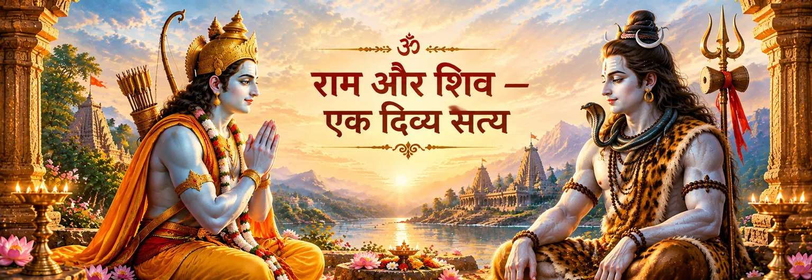

विनम्रता से आरंभ करें
नाम या मत की तुलना करने से पहले श्रद्धा से आरंभ करें। शांत मन राम-भक्ति और शिव-भक्ति दोनों की सुंदरता को बिना प्रतिस्पर्धा में बदले ग्रहण कर सकता है।

एक पवित्र भाव
“एक दिव्य सत्य” की भावना को भक्तिपरक और दार्शनिक विचार के रूप में समझना उचित है; ऐसा दावा नहीं कि हर हिंदू ग्रंथ राम और शिव के बारे में बिल्कुल एक ही भाषा बोलता है। अलग-अलग परंपराएँ अलग ढंग से इस संबंध को व्यक्त करती हैं। रामचरितमानस में राम और शिव को बार-बार परस्पर श्रद्धा के संबंध में रखा गया है, जबकि अध्यात्म रामायण में शिव पार्वती को राम के आध्यात्मिक स्वरूप का उपदेश देने वाले आचार्य के रूप में आते हैं।
भक्त के लिए इस शिक्षा का महत्व समन्वय में है: राम राम ही रहते हैं, शिव शिव ही रहते हैं, फिर भी भक्ति ऐसा पवित्र एकत्व अनुभव कर सकती है जिसमें किसी एक स्वरूप को छोटा करने की आवश्यकता नहीं होती। अनेक नामों, रूपों और कथाओं के माध्यम से दिव्यता की ओर बढ़ने वाली परंपरा में यह भाव विशेष अर्थ रखता है।
शास्त्रीय परतें
विभिन्न स्रोतों को उनकी अपनी ऐतिहासिक और साहित्यिक परतों में पढ़ना चाहिए। इससे राम–शिव संबंध अधिक स्पष्ट होता है, कम नहीं।
भक्तिपरक दृष्टि
इस पृष्ठ के भाव के लिए रामचरितमानस सबसे प्रत्यक्ष भक्तिपरक भाषा देता है। बालकाण्ड में पार्वती उस राम के बारे में पूछती हैं जिनका शिव जप करते हैं और शिव रामकथा का रहस्य समझाते हैं। अन्य प्रसंगों में शिव को राम-भक्त कहा गया है और शिव के प्रति प्रेम को राम-भक्ति से जोड़ा गया है। ये प्रसंग राम और शिव की अलग पहचान मिटाते नहीं, बल्कि दिखाते हैं कि एक स्वरूप की भक्ति दूसरे का सम्मान कर सकती है।
इसीलिए “एक दिव्य सत्य” को ध्यान और मनन की भावना के रूप में समझना अधिक उचित है। भक्त राम के माध्यम से धर्म, करुणा और मर्यादा को अनुभव कर सकता है और शिव के माध्यम से अंतःशांति, वैराग्य और योग की गहराई को। ये अलग भक्तिपरक भाषाएँ हैं, फिर भी श्रद्धा से भरे हृदय में इन्हें बिना विरोध के साथ रखा जा सकता है।
दैनिक भक्ति के लिए
नाम या मत की तुलना करने से पहले श्रद्धा से आरंभ करें। शांत मन राम-भक्ति और शिव-भक्ति दोनों की सुंदरता को बिना प्रतिस्पर्धा में बदले ग्रहण कर सकता है।
राम-भक्त श्रद्धापूर्वक शिव का स्मरण कर सकता है और शिव-भक्त श्रद्धापूर्वक राम का। साधना इतनी सरल हो सकती है कि दोनों के प्रति मंगलभाव से प्रार्थना की जाए।
यदि कोई प्रसंग आश्चर्यजनक लगे, तो पहले देखें कि वह किस ग्रंथ और परंपरा से संबंधित है। वाल्मीकि रामायण, रामचरितमानस, अध्यात्म रामायण और पौराणिक परंपराओं के साहित्यिक संदर्भ और दार्शनिक उद्देश्य अलग हैं।
एकत्व का उद्देश्य सभी स्वरूपों को एक जैसा बना देना नहीं है। उद्देश्य श्रद्धा को व्यापक बनाना है—राम से और गहरा प्रेम करते हुए शिव का भी और गहरा सम्मान करना, और इसके विपरीत भी।
भक्त के लिए
राम–शिव परंपरा की गहरी शिक्षा किसी एक पवित्र नाम को दूसरे के विरुद्ध चुनने की मांग नहीं है। यह इतनी विनम्रता से दिव्यता की ओर बढ़ने का निमंत्रण है कि जहाँ भक्ति पवित्रता दिखाए, वहाँ श्रद्धा बनी रहे। राम धर्म और करुणा के प्रिय प्रभु बने रह सकते हैं; शिव योग, अंतःशांति और रूपांतरण के प्रिय प्रभु। संयुक्त स्मरण में दोनों नाम श्रद्धा के सेतु बन सकते हैं।
भक्तों के सामान्य प्रश्न
नहीं। यहाँ इसे कई परंपराओं में दिखाई देने वाले एकत्व के भाव का भक्तिपरक सारांश माना गया है। इसे वाल्मीकि रामायण या किसी एक ग्रंथ का शब्दशः उद्धरण नहीं बताना चाहिए।
मानस शिव को राम के भक्त और रामकथा के कथावाचक के रूप में प्रस्तुत करता है, साथ ही शिव का सम्मान करता है और शिव-प्रेम को राम-भक्ति से जोड़ता है। यहाँ वर्णित समन्वय में इसकी भक्तिपरक दृष्टि केंद्रीय है।
क्योंकि उनके साहित्यिक संदर्भ और दार्शनिक उद्देश्य अलग हैं। उन्हें अलग पहचानने से बाद की भक्तिपरक व्याख्याओं को किसी पुराने ग्रंथ के नाम से गलत ढंग से जोड़ने से बचा जा सकता है और हर परंपरा को उसके अपने संदर्भ में समझा जा सकता है।
विनम्रता और श्रद्धा के साथ। भक्त अपने मुख्य उपास्य स्वरूप की साधना करते हुए दूसरे स्वरूप के प्रति भी सच्ची श्रद्धा रख सकता है। उद्देश्य भक्ति को गहरा करना है, पवित्र स्वरूपों के बीच प्रतिस्पर्धा बनाना नहीं।
राम–शिव संबंध वाल्मीकि रामायण, रामचरितमानस, अध्यात्म रामायण तथा बाद की पौराणिक और मंदिर-परंपराओं में अलग-अलग ढंग से व्यक्त होता है। यह पृष्ठ उन परतों को अलग रखते हुए उनके साझा भक्तिपरक भावों को प्रस्तुत करता है।